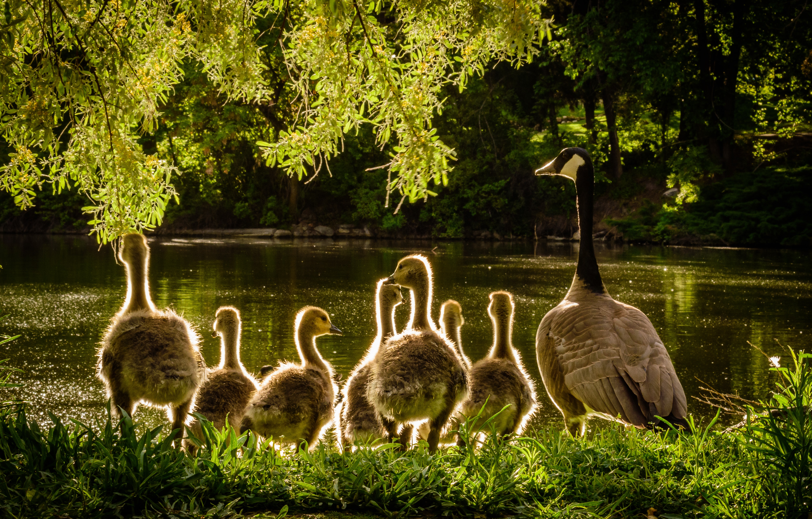

Defenders of Wildlife is dedicated to the protection of all native animals and plants in their natural communities. Founded in 1947, Defenders of Wildlife is the premier U.S.-based national conservation organization dedicated to the protection and restoration of imperiled species and their habitats in North America. Defenders’ approach is direct and straightforward – We protect and restore imperiled species throughout North America by transforming policies and institutions and by promoting innovative solutions. We speak with one voice informed by scientific, legal and policy expertise, hands-on wildlife management experience and effective advocacy. Our team has the experience and knowledge to engage in any arena to protect wildlife—Congress, the courts, federal and state agencies, academia and public debate—and does so tirelessly and effectively. Our field offices give us a grounding in the ecosystems and communities where we work, allowing us to engage the public, build support for conservation and develop practical solutions that will stand the test of time. Fueled by the commitment of our members, partners and supporters, we are building a powerful, enduring voice for wildlife conservation.
Defenders of Wildlife envisions a future where diverse wildlife populations in North America are secure and thriving, sustained by a network of healthy lands and waters. Diverse wildlife populations. Our conservation efforts are targeted at the full range of vulnerable North American biodiversity, from plants to pollinators to predators. While we do not set geographic boundaries on our work, we primarily focus on species of North America, including migratory and transboundary species that move freely across the borders or through the waters of the United States, Mexico and Canada. We recognize that we cannot protect any species without simultaneously protecting the habitats and other species on which it relies. Secure and thriving. We are working for the day when vulnerable North American species rebound to the point that they are secure—no longer threatened with rapid decline or extinction—and thriving in robust, well-distributed populations. Network of healthy lands and waters. Wildlife has the greatest chance of being secure and thriving if it is supported by a transnational network of public and private lands, rivers and coastal waters, core natural areas and working landscapes.
To help attain our vision, Defenders’ strategic plan provides a framework for setting objectives and allocating resources across the organization. This strategic approach prioritizes long-term solutions with measurable results to help ensure that Defenders is an effective voice for wildlife conservation. Clearly defining our vision and focusing our resources will help us to better ensure that North America’s spectacular wild animals and habitats will be here for the next generation.
